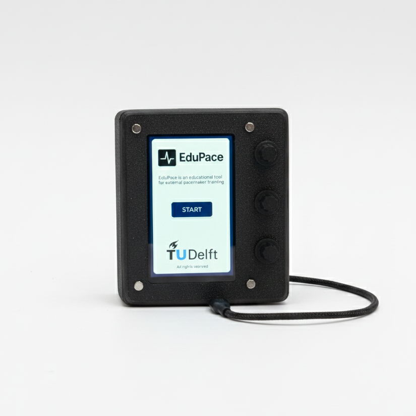
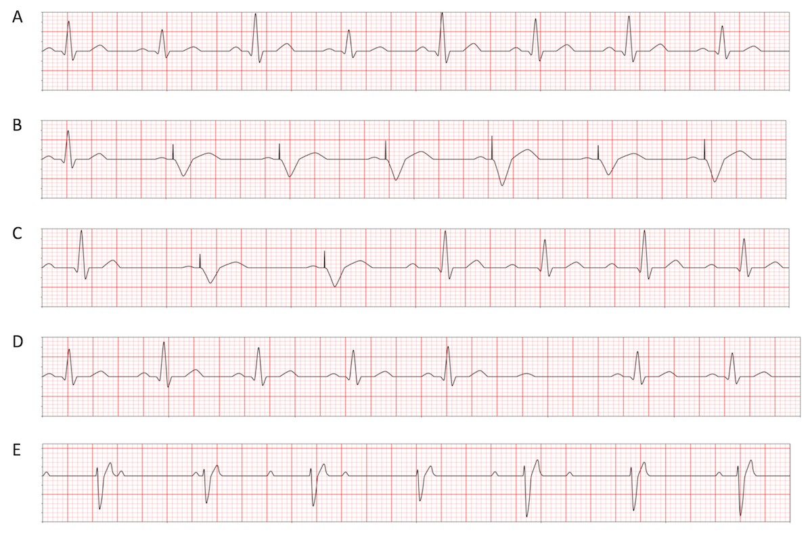
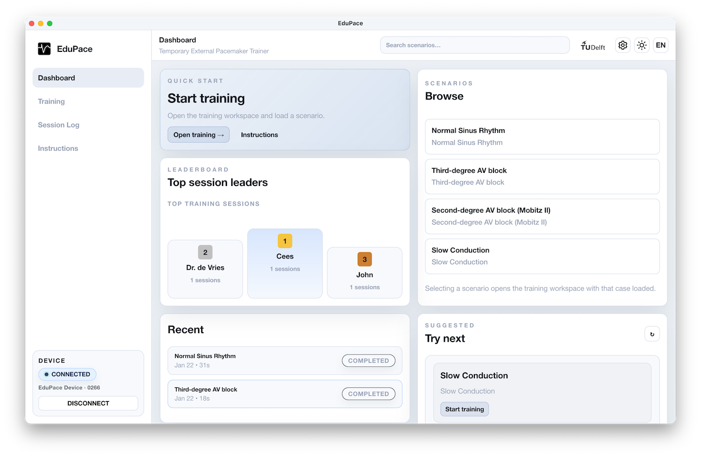
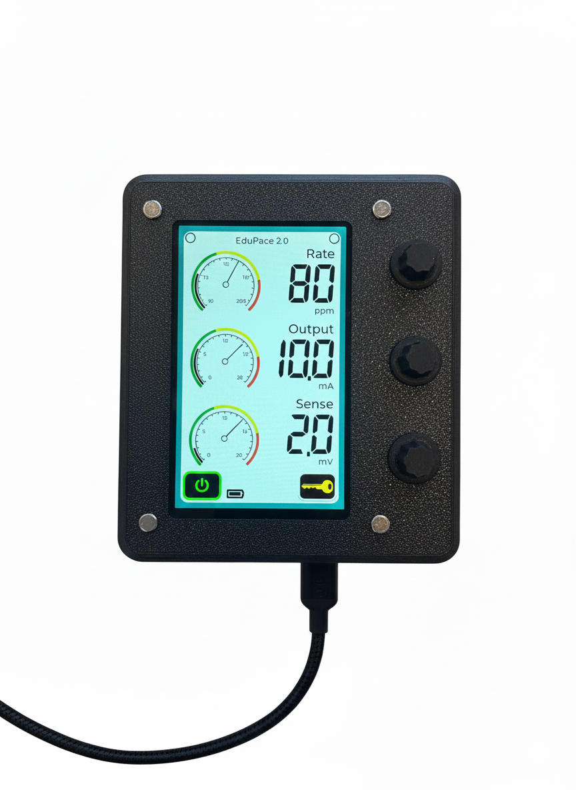
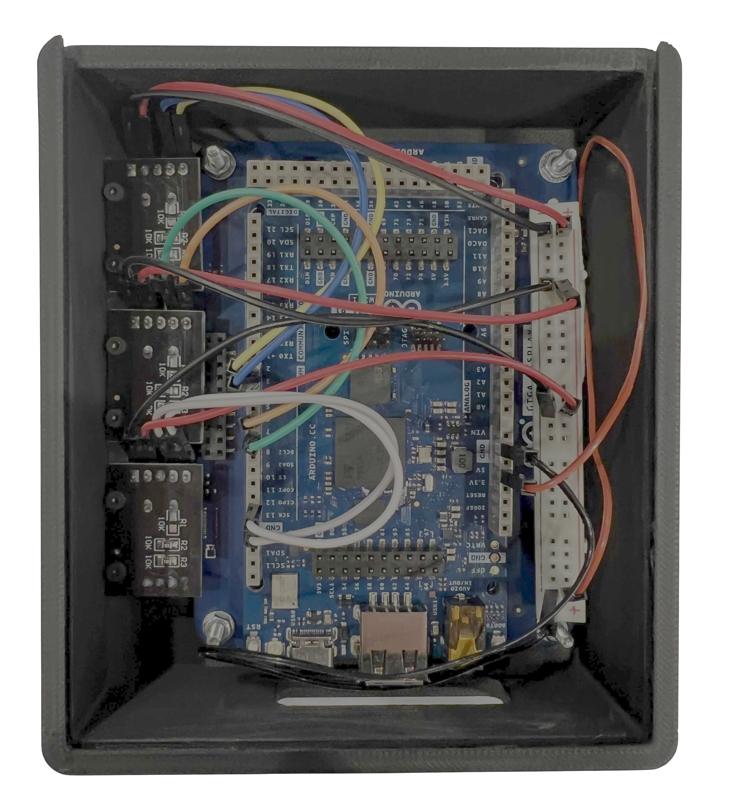
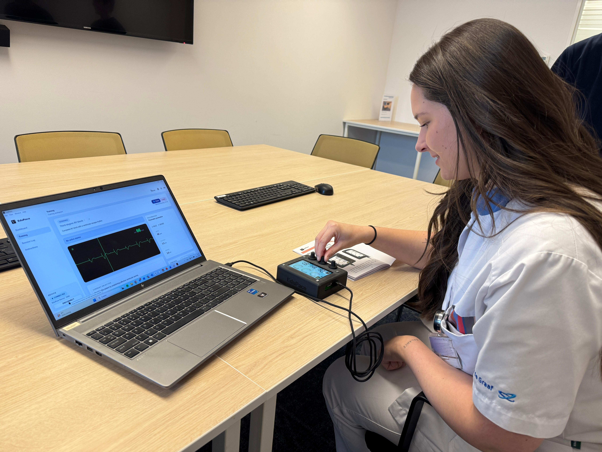

Clinical relevance
Models first-, second-, and third-degree AV blocks with realistic pacing response.
TU Delft Minor Biomedical Engineering · 2025
EduPace is a blended software + hardware simulator that trains nurses and biomedical engineering students to configure a temporary external single-chamber pacemaker. The platform pairs a real-time ECG engine with a tactile control unit, so learners can practice pacing, sensing, and threshold tuning in a setting that mirrors the clinical workflow.

Developed in the TU Delft Minor Biomedical Engineering, EduPace recreates the behavior of the Medtronic 53401 Temporary External Pacemaker for realistic training scenarios. Learners can rehearse device configuration, interpretation, and patient-response adjustments before entering the clinic. The simulator targets bradycardia caused by AV blocks, where dependable ventricular pacing is essential to restore adequate cardiac output and prevent hemodynamic collapse.
Models first-, second-, and third-degree AV blocks with realistic pacing response.
Builds muscle memory through rate, output, and sensitivity tuning on hardware.
Iterated with clinical staff to improve usability, realism, and ergonomics.
Temporary external pacemakers stabilize patients with bradycardia caused by sinoatrial-node dysfunction or atrioventricular (AV) blocks. Because these devices are used infrequently on the ward, many nurses do not practice the setup and adjustments needed to respond quickly in emergencies. EduPace closes that gap with a realistic, repeatable learning environment that mirrors real-world pacing workflows.
Many digital simulators show the interface but lack the tactile experience needed for confident device handling during acute care situations.
Build on the previous student prototype with improved hardware, ergonomics, and clinical realism guided by hospital feedback and real-world pacing workflows.
EduPace evolved through a sequence of software, hardware, and industrial design milestones that culminate in a training-ready simulator. Each stage builds toward the final blended experience used in workshops and live nursing practice.
The ECG engine responds to adjustable parameters (rate, output, and sensitivity) and supports four training rhythms: NSR, 3rd degree AV block, 2nd degree AV block (Mobitz II), and slow conduction. Learners compare pacing strategies and see waveform changes in real time.

The simulator was built as a responsive web app, packaged into an Electron desktop application, and distributed through GitHub releases for offline lab setups.

The physical trainer uses an Arduino GIGA R1 with a touchscreen shield, rotary encoders, and indicator LEDs that match the Medtronic 53401 layout. The enclosure was custom-modeled for comfortable, one-handed pacing adjustments in a training room.

CAD iterations refined the enclosure geometry, knob placement, and assembly points so the device feels intuitive in a training room. The team tested knob spacing, enclosure thickness, and cable routing to keep the layout close to clinical gear.

The final EduPace system blends hardware and software into a single workflow for instructors and learners. Scenarios are selected on the dashboard, adjustments are made on the physical console, and the resulting ECG is reviewed in real time.

Updated ECG modeling and pacing logic create a closer match to clinical expectations.
Nurses reported the interface felt closer to the Medtronic 53401 and easier to operate than the previous prototype.
Future iterations can add atrial and dual-chamber pacing modes, richer ECG superposition, and more scenarios.
ECG morphology research, pacing logic design, documentation lead.
Arduino integration, hardware interaction, serial communication.
Enclosure CAD, 3D printing, hardware assembly and testing.
UI/UX flow, WebSerial integration, scenario architecture.
The EduPace team thanks project supervisor Paul Verschuren and nurse Kim for providing clinical feedback, guidance, and support throughout development.
EduPace is for educational use only and is not a medical device.